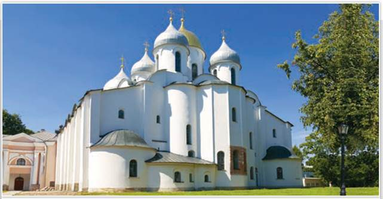
Софийский собор. Великий Новгород. Современный вид
Собор Святой Софии был построен в 1045—1050 гг. по заказу новгородского князя Владимира, сына Ярослава Мудрого. От стен собора уходили в военные походы новгородцы. «Где Святая София, там и Новгород», «Умрём за Святую Софию», — говорили они в лихие дни.
РОССИЯ
МИР
1. Истоки культуры Руси. Период с IX по начало XIII в. является колыбелью отечественной культуры. Культура Руси впитала в себя древние традиции восточных славян и Византии. С тех пор как на Русь пришло христианство, развитие культуры было неразрывно связано с церковью и православной верой.
В период политической раздробленности на Руси развивались не только старые центры культуры. Успешно формировались оригинальные архитектурные и живописные школы отдельных земель. В независимых княжествах шло распространение грамотности, развитие литературной и летописной традиций.
2. Грамотность и учение книжное. Большинство учёных полагают, что письменность пришла на Русь вместе с христианством. В 863 г. братья Кирйлл (в миру Константин) и Мефодий из византийского города Салоники создали славянскую азбуку. С греческого на славянский язык они переводили богослужебные книги. Известно два славянских алфавита — кириллица и глаголица. На Руси использовалась кириллица из 38 букв.
Учить грамоте на Руси стали со времён Владимира Святославича. «Учение книжное» было предметом его заботы. При Ярославе Мудром в Киеве и Новгороде появились школы для мальчиков. Первую в средневековой Европе школу для девочек основала внучка Ярослава Мудрого Анна (Янка), монахиня Андреевского монастыря в Киеве. Монастыри являлись очагами культуры и просвещения.
На Руси было немало грамотных людей среди духовенства, князей, бояр и горожан. Некоторые надписи на стенах храмов (граффити) дошли до наших дней. Многие жители Великого Новгорода знали грамоту, умели писать. Для письма использовали кору берёзы. Записи на коре берёзы называются берестяными грамотами. Они являются ценными историческими источниками — одновременно письменными и вещественными.
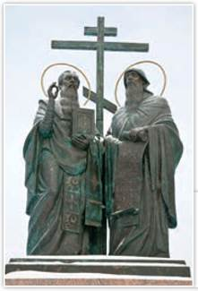
Памятник Кириллу и Мефодию. Скульптор А. Рожников. 2007 г. Коломна
Фигуры святых Кирилла и Мефодия отлиты в бронзе. Монумент отличает проработка образов, историческая достоверность декоративных элементов.
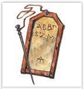
Дощечка с воском и писало
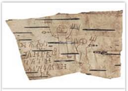
Берестяная грамота Онфима
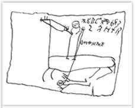
Образец рисунка Онфима
Любопытные детали. На примере берестяных грамот и рисунков новгородского мальчика Онфима видно, как учили грамоте на Руси. Сначала писали буквы, потом заучивали «склады» (слоги) и только потом, читая и копируя различные тексты, овладевали чтением и письмом. Арифметикой начинали заниматься позже. На рисунках Онфима изображены человечки, у которых то три пальца, то семь. Видимо, мальчик умел хорошо писать, но ещё не знал счёта. Возможно, у Онфима, кроме берестяных «тетрадок», были и «учебники» — деревянные доски с вырезанной на них азбукой. Учёные предполагают, что Онфим потерял свои грамоты и рисунки, поэтому они были найдены в одном месте.
Археологи нашли в земле Новгородчины больше тысячи берестяных грамот X—XIV вв., написанных рукой бояр, купцов, простолюдинов и даже холопов. Новгородская болотистая почва бедна кислородом, и поэтому береста, когда-то попав в землю, сохраняется в ней долгое время.
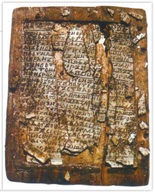
Новгородская псалтырь. XI в.
Самой ранней из известных древнерусских книг является Новгородская псалтырь (или Новгородский кодекс). Эта богослужебная книга состоит из четырёх липовых дощечек, покрытых воском. Текст на дощечках процарапан палочкой для письма. Уникальный памятник письменности был найден археологами во время раскопок в Великом Новгороде в 2000 г. Учёные по износу дерева установили, что Новгородский кодекс использовался много лет, прежде чем был утерян. С помощью новейших методов исследований специалисты определили, что эта книга была создана в конце X — начале XI в.
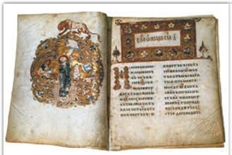
Страница из Остромирова Евангелия. XI в.
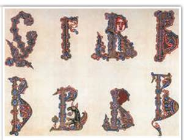
Буквицы. XII в.
Древнейшие образцы книжного искусства живой нитью связывают нас с эпохой рукописной старины.
Богослужебные книги на Русь доставляли из Византии. Можно предположить, что при Десятинной церкви ученики церковнослужителей занимались переводами текстов.
В XI в. крупным центром книжного дела стала мастерская при Софийском соборе в Киеве. До появления бумаги книги создавали на пергамене — тонко выделанной телячьей коже. Это был прочный, но дорогой материал для письма. Обложки книг часто украшали драгоценными металлами и камнями.
Жемчужиной средневековой книжности учёные называют Остромирово Евангелие (1056—1057), написанное дьяконом Григорием для именитого новгородского посадника Остромира. Эта рукописная книга предназначалась для чтения в храме во время церковной службы. Она богато украшена изящными миниатюрами и яркими причудливыми орнаментами. Золотом и красками исполнены заглавные буквы, у каждой из которых есть свой неповторимый рисунок.
Изборники (сборники статей), составленные для князя Святослава Ярославича, датируются 1073 и 1076 гг. Их авторы призывали людей творить добрые дела. Мстиславово Евангелие (1115), созданное для одного из новгородских храмов, украшено миниатюрами с изображением евангелистов.
В XII—XIII вв. на Руси получил распространение сборник «Пчела». Он содержал изречения античных мудрецов, собранные по рубрикам: «О мудрости», «О мужестве», «О правде» и т. д. О минералах, деревьях и животных рассказывал сборник «Физиолог».
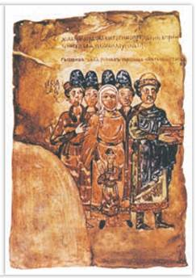
Семья Святослава Ярославича. Изборник Святослава. XI в. Государственный исторический музей. Москва
Изборник Святослава — одна из древнейших точно датированных древнерусских книг — был обнаружен в 1817 г. в Новоиерусалимском монастыре. По нему исследователи изучают особенности древнерусского языка самого раннего периода. Страницы книги украшены цветными миниатюрами, буквицами, рисунками птиц и животных. На одной из миниатюр изображена семья великого князя Святослава Ярославича. Самый маленький из княжеских сыновей на этом портрете — Ярослав, будущий основатель Рязанского княжества. Искусствоведы считают, что древний художник стремился отразить особенности внешности Святослава, его жены и сыновей и, возможно, писал портрет княжеской семьи с натуры.
СВИДЕТЕЛЬСТВО ЭПОХИ
Из Изборника Святослава. 1076 г.
Когда читаешь книгу, не старайся быстро дочитать до следующей главы, но подумай, о чём говорит книга и слова её, и трижды обратись к одной главе... Скажу так: конь управляется и удерживается уздою, праведник же — книгами. Не собрать корабля без гвоздей — не будет праведника без чтения книжного. Как пленник всегда думает о родных своих, так и праведник — о чтении книжном. Красота воину — оружие и кораблю — паруса, так и праведнику — почитание книжное.
Какие слова из Изборника важны и сегодня?
3. Древнерусская литература XI — начала XIII в. В княжение Ярослава Мудрого стали появляться первые оригинальные сочинения древнерусских авторов. Гармонией формы и содержания отличается «Слово о законе и благодати» первого митрополита из русских Иларидна. В нём автор возносит похвалу крестителю Русской земли князю Владимиру, восхваляет его сына Ярослава, утверждает равенство Руси с Византийской империей. Уникальными памятниками древнерусской литературы являются сочинения Владимира Мономаха — «Поучение детям», «Летопись путей», «Письмо Олегу».
Появились жития — жизнеописания отдельных святых, например Житие Феодосия Печерского. Другие известные произведения — «Сказание о Борисе и Глебе», Киево-Печерский патерик. Интересным памятником древнерусской литературы XII в. является «Моление» Даниила Заточника. Автор этого сочинения (или авторы) выступает как человек образованный, мудрый и, несомненно, обладавший литературным даром.
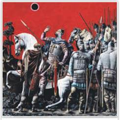
Затмение солнца. Иллюстрация к поэме «Слово о полку Игореве». Художник С. Кобуладзе
Очевидно, в конце XII в. было создано самое совершенное поэтическое произведение древнерусской литературы — «Слово о полку Игореве». Оно посвящено неудачному походу новгород-северского князя Игоря Святославича на половцев в 1185 г.
Подробнее. Главной идеей «Слова о полку Игореве» стал призыв к русским князьям объединить силы для обороны Руси, «загородить полю ворота своими острыми стрелами за Землю Русскую». Неизвестный автор сначала воспевает сказителя, прославляющего героев земли Русской, а затем — наиболее авторитетных русских князей, говорит о том, что усобицы ведут к поражениям в битвах с кочевниками. «Слово о полку Игореве» относится к жанру дружинных песен. Такие сочинения не было принято записывать. Они исполнялись устно, а «Слово...» сохранилось благодаря записи. Его автор упоминает имя одного из своих предшественников — Бояна: «Песнь слагая... он бывало... серым волком в чистом поле рыскал, что орёл, ширял под облаками!»
4. Былины и летописание в X — начале XIII в. В героический век — время становления государства и борьбы с кочевниками — появилось много устных произведений: сказаний о князьях и богатырях. Исследователи устного народного творчества (фольклора) называют эти сказания былинами или старинами.
До нашего времени сохранились былины X в. о Святогоре, Вольге и Микуле Селяниновиче, большая часть былин из киевского цикла о князе Владимире Красное Солнышко и его дружинниках-богатырях. Яркие образы содержат новгородские былины XI—XIII вв. Их герои — гусляр и купец Садко, боярин Ставр, боярский сын легендарный Василий Буслаев. Былины дошли до нас в переработанном виде с наложениями событий более позднего времени. Древнерусское слово «храбр» в них было вытеснено заимствованным «богатырь» (от тюркского «багатур»).
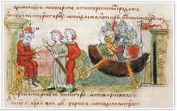
Аскольд и Дир просят у Рюрика разрешение идти на Царьград. Миниатюра из Радзивилловской летописи
Древние книжные миниатюры (небольшие рисунки) позволяют взглянуть на исторические события глазами их современников. На миниатюрах можно рассмотреть оружие, одежду, интерьеры.
С конца X в. на Руси начали вести летописи — записи важнейших событий по годам. Центрами летописания являлись Киев и Новгород. Самой первой дошедшей до нас летописью является «Повесть временных лет».
Подробнее. В «Повести временных лет» летописец доводит рассказ до 1111 г. Известны две её редакции — в составе Ипатьевской и Лаврентьевской летописей. В Ипатьевской копии сохранилась пометка, что её написал «Нестор, чернец Федосьего монастыря Печерского». Авторство Нестора признаётся большинством историков.
В XII — начале XIII в. появлялись всё новые центры летописания, в том числе во Владимиро-Суздальской земле. Литературным памятником общерусского значения был Владимирский свод, составленный в 1212—1215 гг. От других летописей Владимирский свод отличается тем, что он содержит 617 миниатюр, то есть является лицевым (иллюстрированным). Эти миниатюры дошли до нас в копиях Радзивилловской летописи XV в.
5. Зодчество в X — начале XII в. После принятия христианства главным украшением русских городов стали каменные храмы, возведению которых Русь училась у Византии. Греческий крестово-купольный тип храма использовали при сооружении церквей. На плане он имел форму креста. В центре креста возвышался главный барабан с куполом, опиравшийся на столпы. Люди воспринимали храм как символ спасения, библейский Ноев ковчег, поэтому его внутренние залы назывались нефами (кораблями). Нефы перекрывались сводами. К ним примыкали боковые пристройки — хоры и открытые галереи. Крыши покрывали свинцовыми пластинами. В оконные проёмы вставляли деревянные рамы с круглыми стёклами в свинцовых переплётах.
Среди шедевров древнерусской архитектуры был первый каменный храм Руси — киевская Десятинная церковь (989—996).
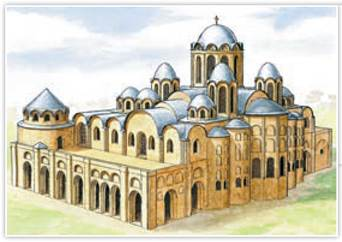
Софийский собор. Реконструкция первоначального облика. Киев
В XVII—XVIII вв. собор Святой Софии в Киеве был перестроен, вместо шлемовидной купола приобрели грушевидную форму, однако реконструкция позволяет увидеть его первоначальный вид.
Её построили византийские мастера. Во времена Владимира перед Десятинной церковью стояла бронзовая колесница, запряжённая четвёркой коней, которую князь привёз из Херсонеса.
При Ярославе Мудром в 1037 г. в честь победы над печенегами греки и их русские ученики начали строительство в Киеве Софийского собора (1037—1041). Софию Киевскую построили из плинфы (тонкого обожжённого кирпича).
Парадным въездом в Киев служили Золотые ворота (1037) с церковью Благовещения. В 1982 г. ворота были воссозданы. Из «Повести временных лет» мы знаем, что в Киеве строились каменные княжеские дворцы, но позднее они погибли. Самый древний дворец князей в летописи отнесён ко временам княгини Ольги. Фундаменты ещё трёх, стоявших вокруг Десятинной церкви, обнаружены археологами.
В середине XI в. в Новгороде и Полоцке были возведены Софийские соборы. Новгородская София (1045—1050) и сегодня сохраняет первоначальный древнерусский облик. София Новгородская была сложена из местного камня песчаника. Чернигов украшал пятиглавый Спасо-Преображенский собор (XI в.), сохранившийся до наших дней.
6. Фрески, мозаики, иконы. Внутреннее оформление соборов способствовало развитию изобразительного искусства. Мастера составляли из кусочков цветного непрозрачного стекла мозаики. По сырой штукатурке красками живописцы создавали фрески, на досках писали иконы.
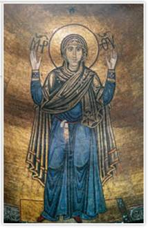
Богородица Оранта. Мозаика. Софийский собор. XI в. Киев.
Оранта — изображение фигуры Богородицы в молитвенной позе, с поднятыми вверх руками. Верующие почитают Оранту как заступницу.
Великолепно сохранились мозаики Софийского собора в Киеве с изображением Христа Вседержителя с закрытой книгой (что характерно для византийских мастеров), пророков, Богоматери Оранты (Молящейся, называемой также «Нерушимая Стена»). Вокруг фигуры Христа располагались мозаики, изображающие четырёх евангелистов, но сохранилась только одна. Мозаики Софии Киевской содержат более 150 цветовых оттенков, аналогичных мозаикам Софийского собора в Константинополе. Особенно интересны фрагменты фресок из Святой Софии Киевской. Убранство храма Святой Софии стало образцом, которому подражали мастера при создании мозаик киевского Златоверхого Михайловского собора и других храмов.
В «Повести временных лет» названо имя одного из прославившихся живописцев, киево-печерского монаха Алипия. Одну часть денег, вырученных за написание икон, Алипий тратил на краски и кисти, другую — на милостыню нищим, третью жертвовал в Печерскую обитель. К сожалению, творения Алипия не сохранились.
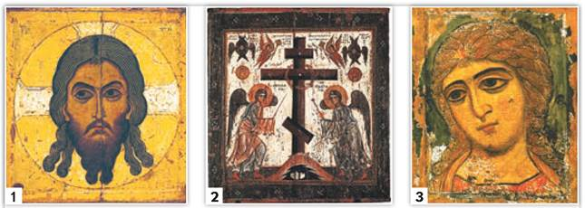
1, 2 — Спас Нерукотворный. Двусторонняя икона. XII в. Новгородская школа. Государственная Третьяковская галерея. Москва;
3 — Архангел Гавриил (Ангел Златые Власы). Икона. XII в. Государственный Русский музей. Санкт-Петербург
Особенность иконы «Спас Нерукотворный» — изображение креста на обратной стороне святыни. На иконе «Архангел Гавриил» по власам ангела проложены тончайшие золотые нити — сусальное золото.
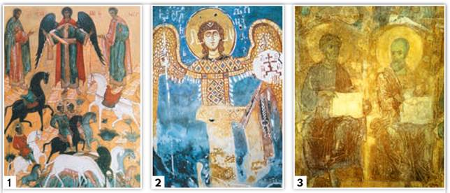
Фрески церкви Спаса на Нередице XII в. Великий Новгород:
1 — Чудо о Флоре и Лавре;
2 — Архангел Михаил. Новгородский государственный объединённый музей-заповедник;
3 — Страшный суд. Фреска. Дмитриевский собор. Владимир
Во время Великой Отечественной войны церковь Спаса на Нередице в Великом Новгороде была полностью разрушена германскими нацистами. Но реставраторам удалось восстановить уникальные изображения.
Книги украшали заставки из орнаментов и миниатюры. В подлинниках X—XII вв. миниатюр сохранилось немного. Это рисунки из Изборника Святослава, заставки из Мстиславова Евангелия.
Иконы XII—XIII столетий напоминают настенные росписи или мозаики. Богоматерь Великая Панагия из Спасо-Преображенского монастыря в Ярославле напоминает мозаичную Оранту Софии Киевской. С XII—XIII вв. сохранилось несколько выносных икон, которые воины на шестах поднимали в сражениях, например: «Чудо от иконы “Знамение”», «Дмитрий Солунский», «Ангел Златые Власы», «Спас Нерукотворный».
Фресок периода раздробленности сохранилось немного, и все они фрагментарны. Наиболее известны фрески из новгородской церкви Спаса на Нередице и Дмитриевского собора во Владимире.
Изобразительное искусство представлено не только живописью, но и скульптурой. В дохристианской Руси на капищах стояли деревянные и каменные идолы. О том, как они выглядели, можно судить по Збручскому идолу. В христианское время для украшения церквей художники-камнерезы на шиферных и известняковых плитах вырезали полуобъёмные изображения — рельефы.
7. Архитектура на Руси в XII — начале XIII в. В период раздробленности во всех землях Руси строились крепости, терема, храмы. Величественные соборы возводили не только греческие и прочие иностранные, но и русские зодчие.
Известным памятником архитектурной школы Киевской земли является церковь Успения Богородицы Пирогощи (1131—1136) на Подоле в Киеве. В Чернигове по образцу старых храмов возвели Борисоглебский собор (1120—1123), а вот черниговская церковь Параскевы Пятницы (1198—1199) представляла образец нового типа. Это храм, устремлённый, подобно башне, к небу.
Северную новгородско-псковскую архитектуру отличало отсутствие богатого декора и чёткие геометрические формы. В Великом Новгороде были построены собор Рождества Богородицы (1119) — главный храм Антониева монастыря, Георгиевский (Юрьевский) собор Юрьева монастыря (1130), небольшая церковь Иоанна Предтечи на Опоках (1127—1130), церковь Параскевы Пятницы на Торгу (1156). Севернее Новгорода на небольшом холме была возведена церковь Спаса на Нередице (1198).
Самый ранний из дошедших до нашего времени памятников псковской архитектуры — Спасо-Преображенский собор Мирожского монастыря (1156). Он, как и новгородские храмы, отличается строгими формами.
Для владимиро-суздальских храмов, напротив, было характерно изящество форм, искусная белокаменная резьба, небольшие декоративные арки на фасадах. Западноевропейские (скорее всего, североитальянские) мастера создали в Кидекше большую церковь Бориса и Глеба (1152). Юрием Долгоруким был заложен Спасо-Преображенский собор (1152) в Переяславле-Залесском — древнейшее сохранившееся здание Северо-Восточной Руси. При Андрее Боголюбском уже в стольном Владимире работали североитальянские зодчие. Они возвели владимирский Успенский собор (1158—1161).
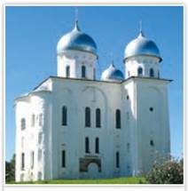
Георгиевский собор Юрьева монастыря. XII в. Великий Новгород
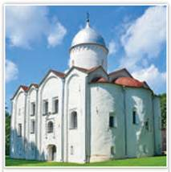
Церковь Иоанна Предтечи на Опоках. XII в. Великий Новгород
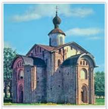
Церковь Параскевы Пятницы на Торгу. 1027 г. Великий Новгород
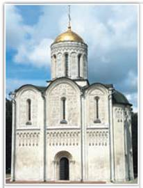
Дмитриевский собор. XII в. Владимир
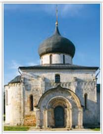
Георгиевский собор. XIII в. Юрьев-Польский. Владимирская область
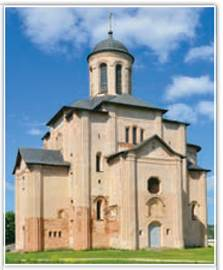
Церковь Михаила Архангела. XII в. Смоленск
Вспомните, кто из владимиро-суздальских князей указал возвести Дмитриевский собор во Владимире.
Уникальным памятником, жемчужиной Владимиро-Суздальской Руси стал храм Покрова на Нерли (1165). В княжение Всеволода Большое Гнездо русские мастера построили во Владимире Дмитриевский собор (1194—1197), окружили галереями одноглавый Успенский собор времён Андрея Боголюбского и сделали его пятиглавым. Одним из шедевров зодчества Северо-Восточной Руси первой трети XIII в. стал Георгиевский собор (1230—1234) в Юрьеве-Польском, стены которого покрывают резные рельефы.
8. Художественное ремесло. Русские мастера владели всеми известными в средневековой Европе видами обработки металлов, кожи, тканей.
Ажурный или напаянный на металлическую пластину узор из тонкой золочёной, серебряной или медной проволоки выполнялся в технике скани (филиграни). Если мастер напаивал на изделие «зёрна» — очень мелкие металлические шарики, то техника называлась зернью. В ремесленных мастерских изготавливали предметы в сложной технике перегородчатой эмали: на тонкой золотой пластине крепили перегородки в виде узора. Затем пространство между ними заполняли разноцветной эмалью, после чего изделие обжигали в печи.
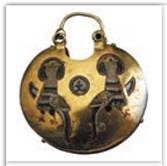
Золотой колт. Перегородчатая эмаль. XII в.
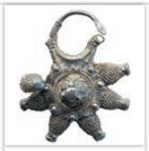
Серебряный колт с зернью. XII в.
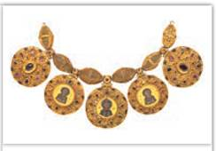
Бармы. XII в. Оружейная палата Московского Кремля
Колт — женское украшение, подвеска. Бармы — ожерелье, которое надевалось поверх богатых княжеских одежд. Золотые княжеские бармы, украшенные камнями и эмалью, и ещё 45 драгоценных предметов нашли крестьяне в 1822 г. под Старой Рязанью, когда вспахивали поле.
9. Повседневная жизнь населения. В древности большинство людей жили в полуземлянках или деревянных домах — избах. Окна в жилищах были небольшими. Их заделывали бычьим пузырём или тканью. Для освещения использовали лучины — тонкие щепки. Князья и бояре жили в хоромах, которые состояли из нескольких построек. Рядом с хоромами находились кузница, конюшня, кладовые и др.
Жили в основном большими семьями. Они состояли из главы семьи, его супруги и детей. Взрослые сыновья не уходили от родителей даже после женитьбы. Дети с малых лет приучались к труду и помогали родителям по хозяйству. Одежда большинства людей была простой. Мужчины носили рубахи и порты — штаны, а также зипуны — кафтаны без воротника с длинными рукавами. Женщины носили длинные рубашки, поверх которых надевали юбки — понёвы.
Сельские жители ходили в лаптях. Горожане нередко носили кожаную обувь — поршни. Одежда богатых людей делалась из дорогих тканей — шёлка или парчи. Вместо зипунов бояре и князья носили епанчу — плащ без рукавов. На ноги надевали сапоги. Женщины из богатых семей носили сарафаны.
Новый год на Руси после принятия христианства начинался с 1 марта. По преданию, именно в этот день Бог сотворил мир.
ПОДВЕДЁМ ИТОГИ
Эпоха государства Русь и период раздробленности русских земель были связаны с подъёмом культуры. Создавались литературные произведения, обогащалось устное народное творчество. Были построены замечательные памятники архитектуры. Их украшали мозаики, фрески, иконы.
Вопросы и задания
Работаем с хронологией
Изучите хронологическую таблицу в начале параграфа. Чем в XII в. различались архитектурные сооружения русских земель и Западной Европы?
Работаем с источником
Прочитайте отрывок из статьи А. Куликовой «Естественно-научные представления в Древней Руси» и ответьте на вопросы.
Время донесло до нас и имя первого русского учёного, астронома и математика Кирика Новгородца, автора научного трактата «Учение им же ведати человеку числа всех лет», написанного им в 1136 г. ...Это средневековый научный трактат, посвящённый применению знаний по церковной хронологии и средневековой вычислительной математике. В нём идёт речь о единицах, счёте времени, об основных понятиях календаря и использовании этих сведений в хронологии. Древнерусский автор демонстрирует высокое умение счёта, производя точные выкладки с числами порядка десятков миллионов. «Учение» в заключительной части содержит сведения об авторе: 26-летний иеродиакон Кирик, то есть монах, имевший духовный сан диакона, был доместиком (руководителем хора) церкви Святой Богородицы Антониева монастыря в Новгороде.
Работаем с понятиями
Расскажите, чем различаются мозаики, фрески и иконы.
ДОПОЛНИТЕЛЬНЫЕ МАТЕРИАЛЫ
1. Остромирово Евангелие. XII в. Цифровая копия с описанием.
2. «УЧИТЕЛЮ И УЧЕНИКУ».
Материалы к параграфу на портале «История.РФ».